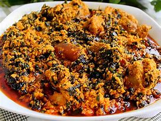

Dezi's Recipe: EGUISI SOUP

This Nigerian Egusi Soup recipe will show you how to make popular West African soup with melon seeds.
Nigerian Egusi Soup is a soup thickened with ground melon seeds and contains leafy and other vegetablles. it is one of the most popular soups prepared by most tribes in Nigeria with considerale variation and often times eaten with dishes like Pounded Yams, Semovita and others. It can be prepared with goat,beef,chicken,fish,or shellfish.
Nigerian Egusi Soup Recipes
This recipe will show you how to make Nigerian Egusi Soup, a popular West African Soup made with melon seed.
- 1cup of Onions&fresh pepper blend(about 3-5 and fresh chillies to taste)
- 4 cups of egusi(melon seeds,ground or milled)
- half to one cup of palm oil
- salt and maggi(to taste)
- ground crayfish (to taste)
- 7-8 cups stockfish
- cooked meat & fish(quantity and variety)
- 2 cups cut pumpkin leaf
- 3 tablespoons bitter leaf(washed)
EGUISI PASTE:
- Prepare the egusi paste:
- Blend egusi seed and water. Set aside
MAKE THE SOUP:
- In a large pot, heat the palm oil on medium for a minute and then add the onion and pepper mix. Allow to simmer
- Scoop teaspoon size balls of te egusi mix into the pot and allow to cook.
- Allow to cook for 15 - 20 minutes and then add the bitter leaf.
- leave for another 5min while stirring and then add the meat stock and stockfish.
- Check taste and add the seasonings (salt,maggi,ground crayfish,ground pepper).
- Allow to simmer together and then add the meat or fish as desired then allow to cook together for 8-10mins.
- Add cut-up pumpkin leaves,stir and allow to cook till leave wilt.
- Stir,check seasoning and adjust as follows.